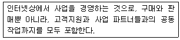
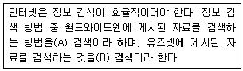

초음파비파괴검사기능사 (2010-07-11 기출문제)
1과목: 초음파탐상시험법
1. 방사선투과시험과 초음파탐상시험을 비교하였을 때 초음파탐상시험이 더 우수한 경우는?
- 블로홀 검출
- 라미네이션 검출
- 결과의 저장 용이
- 결함의 종류 판별
(정답률: 88%)

2. 비파괴시험방법 중 자외선등이 필요하지 않는 조합으로만 짝지어진 것은?
- 방사선투과시험과 초음파탐상시험
- 초음파탐상시험과 자분탐상시험
- 자분탐상시험과 침투탐상시험
- 방사선투과시험과 침투탐상시험
(정답률: 90%)
3. 와전류탐상시험 방법이 아닌 것은?
- 펄스에코검사
- 임피던스 검사
- 위상분석 시험
- 변조분석시험
(정답률: 79%)
4. 비파괴검사의 안전관리에 대한 설명 중 옳은 것은?
- 방사선의 사용은 근로기준법에 규정되어 있고 이에 따르면 누구나 취급해도 좋다.
- 방사선투과시험에 사용되는 방사선이 강하지 않은 경우 안전 측면에 특별히 유의할 필요는 없다.
- 초음파 탐상시험에 사용되는 초음파가 강력한 경우 유자격자에 의한 안전관리 지도가 의무화되어 있다.
- 침투탐상시험의 세정처리 등에 사용된 폐액은 환경, 보건에 유의하여야 한다.
(정답률: 85%)
5. 45° 경사각탐촉자로 시험체의 결함을 검출할 때 가장 잘 검출 될 수 있는 것은?
- 음파의 진행 방향에 수직이며, 탐상 표면과 평행한 결함인 경우
- 음파의 진행 방향과 같으며, 탐상 표면에 수직인 결함인 경우
- 음파의 진행 방향에 수직이며, 탐상 표면과 45°를 이루는 결함인 경우
- 음파의 진행 방향과 같으며, 탐상 표면과 45°를 이루는 결함인 경우
(정답률: 57%)
6. 방사선이 물질과의 상호작용에 영향을 미치는 것과 거리가 먼 것은?
- 반사작용
- 전리작용
- 형광작용
- 사진작용
(정답률: 78%)
7. 고체가 소성 변형하면서 발생하는 탄성파를 검출하여 결함의 발생, 성장 등 재료 내부의 동적 거동을 평가 하는 비파괴검사법은?
- 누설검사
- 음향방출검사
- 초음파탐상검사
- 와전류탐상시험
(정답률: 80%)
8. 비파괴검사법 중 반드시 시험 대상물의 앞면과 뒷면 모두 접근 가능하여야 적용 할 수 있는 것은?
- 방사선투과시험
- 초음파탐상시험
- 자분탐상시험
- 침투탐상시험
(정답률: 79%)
9. 후유화성 침투액(기름베이스 유화제)를 사용한 침투탐상시험이 갖는 세척방법의 주된 장점은?
- 물 세척
- 솔벤트 세척
- 알칼리 세척
- 초음파 세척
(정답률: 86%)
10. 비파괴검사를 하는 목적이 아닌 것은?
- 제조기술의 개량
- 제조원가의 절감
- 신뢰성의 향상
- 보수공정의 훈련
(정답률: 59%)
11. 와전류탐상 시험코일이 아닌 것은?
- 관통형 코일
- 내삽형 코일
- 표면형 코일
- 곡면형 코일
(정답률: 78%)
12. 연강을 자계의 가운데 놓으면 자석이 되고, 바깥에 놓으면 자석이 되지 않는 현상을 무엇이라 하는가?(오류 신고가 접수된 문제입니다. 반드시 정답과 해설을 확인하시기 바랍니다.)
- 자극화
- 자기검출
- 투자성
- 누설자속
(정답률: 41%)
13. 시험체에 관통된 결함의 확인을 위한 각종 비파괴검사방법의 설명으로 틀린 것은?
- 타진법을 응용해서 결함 부분을 두드린다.
- 진공상자를 이용하여 흡입된 압력차를 알아본다.
- 시험체 전면에 침투제를 적용하고, 반대면에는 현상제를 적용한다.
- 시험체 내부를 밀봉하고, 가압하여 시험체 외부에 비눗물을 적용한다.
(정답률: 66%)
14. 누설검사시 1기압과 값이 동일하지 않은 것은?
- 760mmHg
- 760Torr
- 980kg/cm2
- 1013mbar
(정답률: 89%)
15. 횡파가 존재할 수 있는 물질은?
- 물
- 공기
- 오일
- 아크릴
(정답률: 73%)
16. 교정된 A-scan 탐상기 스크린에서 시험체의 끝부분을 나타내는 지시는?
- 결함
- 초기펄스
- 표면지시
- 저면지시
(정답률: 63%)
17. 수침법에서 20mm의 물거리는 강재 두께가 몇 mm일 때 저면 에코가 스크린 화면상에서 같은 위치에 나타나는가? (단, 강재의 음속 : 5900m/s, 물에서의 음속 : 1475m/s 이다.)
- 20mm
- 40mm
- 60mm
- 80mm
(정답률: 55%)
18. 어떤 재질에서의 초음파 속도가 4.0×103 m/s이고, 탐촉자의 주파수가 5MHz 이면 파장은 몇 mm인가?
- 0.08
- 0.04
- 0.4
- 0.8
(정답률: 40%)
19. 황산리튬 진동자의 장점으로 옳은 것은?
- 수신효율이 좋다
- 물에 녹지 않는다.
- 기계적 저항성이 높다
- 200℃ 이상의 고온에서도 사용이 가능하다.
(정답률: 90%)
20. 초음파탐상검사시 많은 수의 작은 지시들, 즉 임상에코를 나타내는 결함은?
- 균열
- 다공성 기포
- 수촉관
- 큰 비금속개재물
(정답률: 84%)
2과목: 초음파탐상관련규격
21. 초음파탐상시험에서 접촉 매질이 갖추어야 할 요건과 거리가 먼 것은?
- 부식성, 유독성이 없어야 한다.
- 적용할 면에 대하여 균질해야 한다.
- 쉽게 적용하고 제거하기가 쉬워야 한다.
- 탐촉자 내부로 쉽게 흡수될 수 있어야 한다.
(정답률: 91%)
22. 압연한 판재의 라미네이션 검사에 가장 적합한 초음파탐상 시험방법은?
- 수직법
- 판파법
- 경사각법
- 표면파법
(정답률: 75%)
23. 초음파를 발생시키고 수신하는 진동자는 전기적 에너지를 기계적 에너지로 또 기계적 에너지는 전기적 에너지로 변화시키는 성질을 가지고 있다. 이와 같은 현상을 무엇이라 하는가?
- 압전효과
- 압력효과
- 도플러효과
- 초음파효과
(정답률: 89%)
24. 초음파탐상시험시 에코높이의 조정에 관계되는 조정부는?
- 시간축발생기
- 음극선(CRT)
- 리젝션(rejection)
- 지연조절기(delay control)
(정답률: 66%)
25. 초음파탐상시험에서 펄스반사법에 의한 경사각탐상시 탐상기의 탐상면과 저면이 평행으로 되어 있지 않은 경우에 대한 설명으로 가장 적절한 것은?
- 탐상시 투과력을 감소시킨다.
- 스크린 상에 저면 반사파가 나타나지 않을 수 있다.
- 재질 내에 존재하는 다공의 상태를 잘 지시해 준다.
- 입사면과 평행으로 놓인 결함의 위치를 탐상하기가 어렵게 된다.
(정답률: 56%)
26. 강 용접부의 초음파탐상 시험방법(KS B 0896)에서 1탐촉자 경사각탐상법을 적용하는 경우, 판두께 90mm인 평판, 맞대기 이음 용접부의 탐상에 적합한 탐상면과 탐상의 방향 및 탐상법은 원칙적으로 어떤 것이 좋은가?
- 한면 한쪽 방향, 직사법
- 양면 양쪽 방향, 직사법
- 한면 양쪽 방향, 직사법 및 1회 반사법
- 양면 한쪽 방향, 직사법 및 1회 반사법
(정답률: 65%)
27. 알루미늄의 맞대기용접부의 초음파경사각탐상 시험방법(KS B 0897)에 따른 탐촉자의 선정이 틀린 것은?
- 1탐촉자법에 사용하는 경사각 탐촉자의 굴절각은 전반의 대상 결함 모두에 45°인 탐촉자를 쓴다,
- 1탐촉자법에 사용하는 경사각 탐촉자의 빔노정이 50mm이하인 경우 진동자 치수는 5x5mm를 쓴다.
- 탠덤탐상법에 사용하는 경사각 탐촉자는 결함의 깊이가 25mm이하인 경우 5M[10x10]A70AL을 쓴다.
- 탠덤탐상법에 사용하는 경사각 탐촉자는 결함의 깊이가 25mm를 초과하는 경우 5M[10x10]A45AL을 쓴다.
(정답률: 54%)
28. 금속재료의 펄스반사법에 따른 초음파탐상 시험방법 통칙(KS B 0817)에서 리젝션은 어떻게 규정하고 있는가?
- 미세한 에코까지 확인하기 위해서 사용한다.
- 시험할 때에는 원칙적으로 사용하지 않는다.
- 증폭직선성을 양호하게 하기 위하여 사용한다.
- 중대한 결함에코를 빠뜨리지 않게 하기 위하여 사용한다.
(정답률: 76%)
29. 압력용기용 강판의 초음파탐상 검사방법(KS B 0233)에서 이진동자 수직탐촉자에 의한 결함의 분류, 결함의 정도와 표시 기호의 설명이 잘못된 것은? (단, x주사이다)
- 결함의 정도가 가벼움일 때 표시기호는 O을 붙인다.
- 결함의 정도가 중간일 때 표시기호는 △로 붙인다.
- DM선을 넘고 DH선이하의 분류시 중간 결함으로 한다.
- DH선을 넘어서는 분류는 대상에서 제외시킨다.
(정답률: 70%)
30. 금속재료의 펄스반사법에 따른 초음파탐상 시험방법(KS B 0817)에 따라 탐상도형을 표시할 때 부대 기호 중 다중반사의 기호 표시 방법으로 옳은 것은?(단, 동일한 반사원으로부터의 에코를 구별할 필요가 있는 경우이다.)
- 기본 기호의 왼쪽 위에 1,2.......,n 의 기호를 붙인다.
- 기본 기호의 왼쪽 위에 a,b,c...... 의 기호를 붙인다.
- 기본 기호의 오른쪽 아래에 1,2......n의 기호를 붙인다.
- 기본 기호의 오른쪽 아래에 a,b,c.....의 기호를 붙인다.
(정답률: 69%)
31. 초음파탐상장치의 성능측정 방법(KS B ⑤34)에 따라 수직 탐상할 경우 사용되는 근거리 분해능 측정용 시험편은?
- RB-RA형
- RB-RB형
- RB-RC형
- STB-A형
(정답률: 69%)
32. 강용접부의 초음파탐상 시험방법(KS B 0896)에 의한 평판 이음 용접부의 탐상에서 판 두께 40mm이하의 경우 사용되는 탐촉자의 공칭 굴절각은?
- 45°
- 60°
- 65°
- 70°
(정답률: 52%)
33. 강용접부의 초음파탐상 시험방법(KS B 0896)에 의한 경사각탐상시 흠의 지시길이는 최대 에코높이를 나타내는 탐촉자 용접부 거리에서 좌우 주사하여 측정된 에코높이가 무엇을 넘는 탐촉자의 이동거리로 하는가?
- H선
- M선
- L선
- 최대 에코 높이의 1/4
(정답률: 58%)
34. 강용접부의 초음파탐상 시험방법(KS B 0896)에 의한 시험결과의 분류시 판두께가 16mm, M검출레벨로 영역 III인 경우 흠 지시길이가 8mm 이었다면 어떻게 분류되는가?
- 1류
- 2류
- 3류
- 4류
(정답률: 73%)
35. 강용접부의 초음파탐상 시험방법(KS B 0896)에서 경사각탐상시 STB 굴절각은 몇 도 단위로 읽는가?
- 0.1°
- 0.5°
- 1°
- 2°
(정답률: 72%)
36. 초음파탐상 시험용 표준시험편(KS B 0831)에서 G형 감도표준시험편(STB-G) 중 기호가 STB-G V15-5.6인 시험편의 길이로 옳은 것은?
- 150mm
- 180mm
- 200mm
- 250mm
(정답률: 67%)
37. 건축용 강판 및 평강의 초음파탐상시험에 따른 등급분류 와 판정기준(KS D 0040)에서 탐상시험을 할 수 있는 강판의 최소 두께는?
- 5mm
- 8mm
- 10mm
- 13mm
(정답률: 40%)
38. 강용접부의 초음파탐상 시험방법(KS B 0896)에서 T이음 및 각이음의 경사각 탐상시 판두께가 80mm인 경우 사용되는 탐촉자의 공칭 굴절각은?
- 45°만 사용
- 65°만 사용
- 70°와 45° 를 병용
- 65°와 45°를 병용
(정답률: 48%)
39. 건축용 강판 및 평강의 초음파탐상시험에 따른 등급분류와 판정 기준(KS D 0040)에서 수직탐촉자를 사용한 경우 흠 에코높이가 50%＜ F1 ≤ 100%(B1 ≥ 100 인 경우)일 때 결함의 분류(표시기호)는?
- ◇
- △
- X
- O
(정답률: 64%)
40. 비파괴검사 용어(KS B ⑤50)에 따른 초음파탐상시험에서 “결함지시길이”의 정의로 옳은 것은?
- 탐촉자의 이동거리에 따라 추정한 흠집의 겉보기 길이
- 탐촉자의 이동거리에 의해 추정한 흠집의 실제 길이
- 1스킵된 이동거리를 추정한 흠의 겉보기 길이
- 2스킵된 이동거리를 추정한 흠의 실제 길이
(정답률: 63%)
3과목: 금속재료일반 및 용접일반
41. 다음이 설명하고 있는 것은?

- 폰뱅킹
- 인터넷뱅킹
- 전자결재
- 전자상거래
(정답률: 45%)
42. 일반적인 부트 바이러스의 진단법이 아닌 것은?
- 부트섹터에 변화가 있는지 확인한다.
- 부팅 시 부팅 횟수를 조사한다.
- 파일크기의 증가 여부를 검사한다.
- 사용 메모리의 감소 여부를 조사한다.
(정답률: 20%)
43. 출력장치에 해당하지 않는 것은?
- speaker
- printer
- joystick
- plotter
(정답률: 33%)
44. 컴퓨터와 관련된 범죄로 볼 수 없는 것은?
- 소프트웨어 불법 복제
- 통신망을 이용한 기업의 정보 유출
- 인터넷 뱅킹을 이용한 본인 계좌조회 및 이체
- 타인의 ID를 이용한 유료 게임 사이트 이용
(정답률: 42%)
45. 다음중( ) 안에 들어갈 적절한 용어로 짝지어진 것은?

- A파일, B고퍼
- A뉴스, B웹 문서
- A웹 문서, B뉴스
- A고퍼, B파일
(정답률: 25%)
46. 인성이 있는 금속으로 비중이 약 8.9이고, 용융점이 약 1455°C인 원소는?
- 철
- 금
- 니켈
- 마그네슘
(정답률: 80%)
47. 알루미늄-규소계 합금을 주조할 때, 금속 나트륨을 첨가하여 조직을 미세화시키기 위한 처리는?
- 심랭처리
- 개량처리
- 용체화 처리
- 구상화 처리
(정답률: 67%)
48. 자기 헤드, 변압기용 철심, 자기 버블(bubble) 재료 등의 자성 재료 분야에 많이 응용되는 소재는?
- 초전도 재료
- 비정질 합금
- 금속 복합 재료
- 형상 기억 합금
(정답률: 64%)
49. 강의 열처리에서 담금질하는 주목적은?
- 경화를 하기 위하여
- 취성을 증대시키기 위하여
- 연성을 증대시키기 위하여
- 탈산을 증대시키기 위하여
(정답률: 87%)
50. 다음 중 γ-철(Fe)과 시멘타이트와의 공정조직은?
- 페라이트
- 펄라이트
- 오스테나이트
- 레데뷰라이트
(정답률: 72%)
51. 다음 중 시효경화성 있는 합금은?
- 인코넬
- 두랄루민
- 화이트메탈
- 모넬메탈
(정답률: 78%)
52. 7-3 황동에서 1%정도의 주석을 첨가한 합금은?
- 애드미럴티 황동
- 델타메탈
- 네이벌 황동
- 문쯔 메탈
(정답률: 73%)
53. 다음 중 주철의 유동성을 저해하는 성분은?
- S
- P
- C
- Mn
(정답률: 45%)
54. 연강의 응력-변형률 곡선에서 응력을 가해 영구변형이 명확하게 나타날 때의 응력에 해당하는 것은?
- 파단점
- 비례한계점
- 탄성한계점
- 항복점
(정답률: 59%)
55. 다음 중 체심입방격자(BBC)의 배위수는?
- 6개
- 8개
- 12개
- 16개
(정답률: 79%)
56. 금속 가공에서 재결정 온도보다 낮은 경우의 가공을 무엇이라 하는가?
- 냉간 가공
- 열간 가공
- 단조 가공
- 인발 가공
(정답률: 90%)
57. 고속도강(high speed steel)에 대한 설명으로 틀린 것은?
- 마멸저항이 크다.
- 주조상태로서는 매짐이 크다.
- 고속도의 절삭작업에 사용된다.
- 표준성분은 8W%-4Co%-1Cr% 이다.
(정답률: 65%)
58. 피복 아크 용접봉의 피복제의 주된 역할 설명 중 틀린 것은?
- 전기 전도를 양호하게 한다.
- 슬래그를 제거하기 쉽게 하고, 파형이 고운 비드를 만든다.
- 용착 금속의 냉각속도를 느리게 하여 급냉을 방지한다.
- 스패터의 발생을 적게 한다.
(정답률: 49%)
59. 불활성 가스 텅스텐 아크 용접시 사용되는 불활성 가스는?
- 산소, 메탄
- 아세틸렌, 산소
- 산소, 수소
- 헬륨, 아르곤
(정답률: 75%)
60. 내용적 40L의 산소 용기에 130기압의 산소가 들어 있다. 1시간에 400L를 사용하는 토치를 써서 혼합비 1:1 의 중성불꽃으로 작업을 한다면 몇 시간이나 사용할 수 있겠는가?
- 13
- 18
- 26
- 42
(정답률: 55%)
따라서, 초음파탐상시험은 방사선투과시험보다 더욱 세밀하고 정확한 결함 검출이 가능합니다. 특히, 라미네이션 검출에 우수한 성능을 보입니다.
라미네이션은 금속 내부의 층으로 나뉘어진 결함으로, 방사선투과시험에서는 검출이 어렵습니다. 하지만 초음파탐상시험에서는 초음파가 라미네이션을 통과할 때 반사되는 신호를 이용하여 검출할 수 있습니다. 따라서, 라미네이션 검출에 초음파탐상시험이 더 우수합니다.